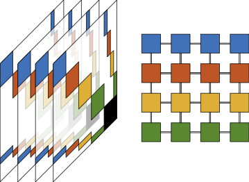

Software
Main Contributor
|
1. ParGeMSLR: Parallel Generalized Multilevel Low-rank Preconditioner ParGeMSLR (Parallel Generalized Multilevel Schur Low-Rank) is a MPI-based C++ library. This is a distributed-memory Multilevel Low-Rank Preconditioning and Solution package for the solution of large and sparse (non)symmetric linear systems of equations. The Parallel GeMSLR preconditioner is purely algebraic. |

|
|
2. SchurCheb: Schur Complement Chebyshev Eigenvalue Solver for Small Eigenvalues SchurCheb is a MPI-based C++ research code for computing partial spectral factorizations of matrix pencils via Chebyshev approximation. This is a distributed-memory package for computing all the eigenvalues (and corresponding eigenvectors) of a large, sparse, real symmetric positive definite matrix pencil that lie within a target interval. The algorithm is purely algebraic. |
 |
Collaborator
|
1. HYPRE: High Performance Preconditioners HYPRE is a library of high performance preconditioners and solvers featuring multigrid methods for the solution of large, sparse linear systems of equations on massively parallel computers. The figure on the right is from the HYPRE's GitHub page. |